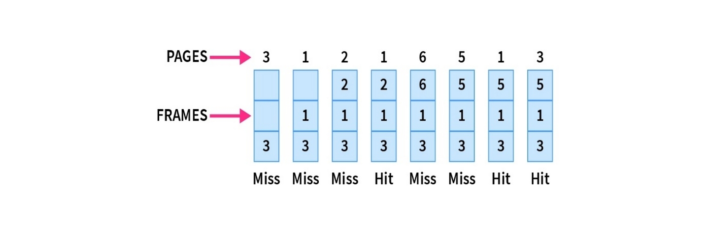

Advantages
- Excellent efficiency
- Simple data structures can be used to implement
- Less complexity
Disadvantages
- Future program knowledge is required, which is not always possible.
- Error management is difficult.
- Time Consuming
Examples
Example: Consider the Pages referenced by the CPU in the order are 3, 1, 2, 1, 6, 5, 1, 3

- As in the above figure shown, let there are 3 frames in the memory.
- Initially, since all the slots are empty, pages 3, 1, 2 cause a page fault and take the empty slots.
- When page 1 comes, it is in the memory and no page fault occurs.
- When page 6 comes, it is not in the memory, so a page fault occurs and 2 is removed as it is not going to be used again.
- When page 5 comes, it is also not in the memory and causes a page fault. Similar to above 6 is removed as it is not going to be used again.
- When page 1 and page 3 come, they are in the memory so no page fault occurs.
The number of Page Faults = 5
Working Example
Instruction: For a reference string{a,b,c,d}, Enter in the format {a b c d}
Warning: The Reference String cannot be NEGATIVE and the Number of frames should be more than 0!